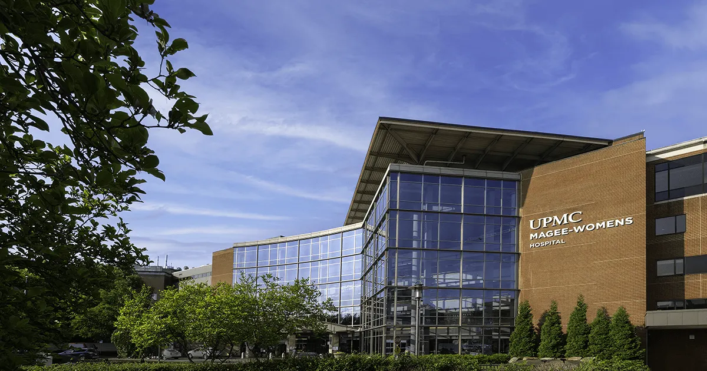
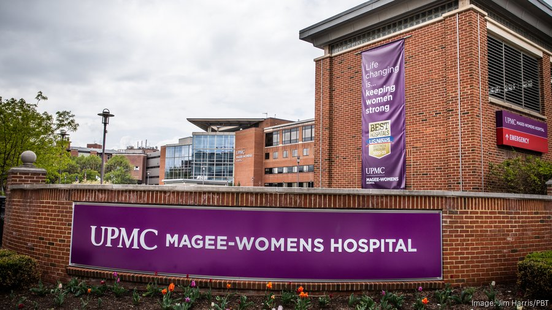

Designing w/CARE
A healthcare experience project focused on improving emotional clarity and practical support for gynaecological oncology patients and care teams at UPMC Magee-Womens Hospital.
Context
Oncology care journeys are emotionally heavy, information-dense, and often fragmented. This project looked at how thoughtful experience design can reduce friction, build trust, and make the care pathway easier to understand for patients and caregivers.

Challenge
- How might we help patients feel informed and in-control during high-stress moments?
- How might we reduce communication gaps between patients and clinical teams?
- How might we design support that is practical, compassionate, and feasible for staff?
Early synthesis showed that patients were often overwhelmed by terminology and timing, while staff were constrained by workload and fragmented communication channels. The core opportunity was to design around moments of uncertainty, not only around hospital touchpoints.

Approach
- Mapped end-to-end patient journeys to identify stress peaks and decision bottlenecks.
- Conducted stakeholder interviews to align patient needs with operational realities.
- Developed and tested experience concepts focused on guidance, reassurance, and continuity.
The design direction centred on plain-language communication, pre-visit orientation support, and clear handoff moments between teams. Instead of a single artefact, the outcome was a cohesive set of service-level recommendations that could scale across related care pathways.
Related Writing
This project was documented through a multi-author research and design writing series. These articles capture how we framed the problem space, mapped current systems, and developed direction for stronger care coordination across transitions.
Outcomes
- Established a clearer problem framing around emotional and informational load.
- Produced concept directions that balanced patient empathy with hospital feasibility.
- Strengthened confidence in service-design methods for high-stakes healthcare contexts.